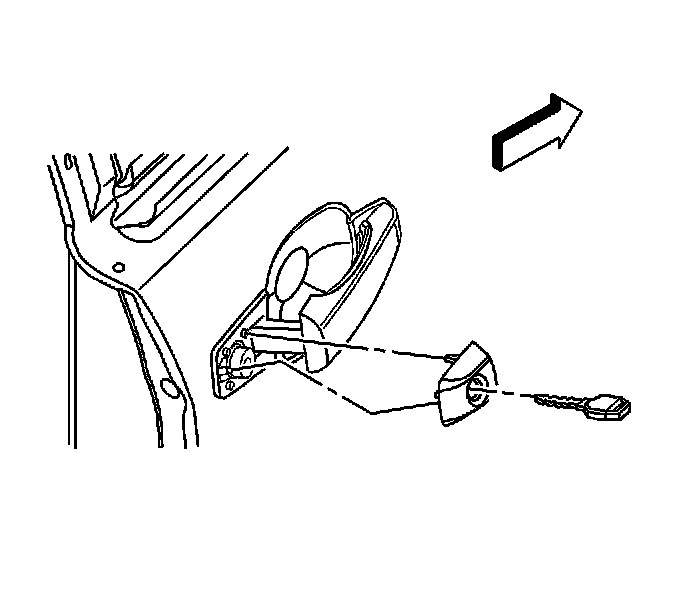
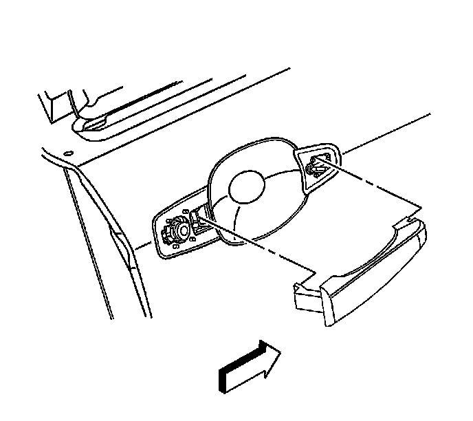
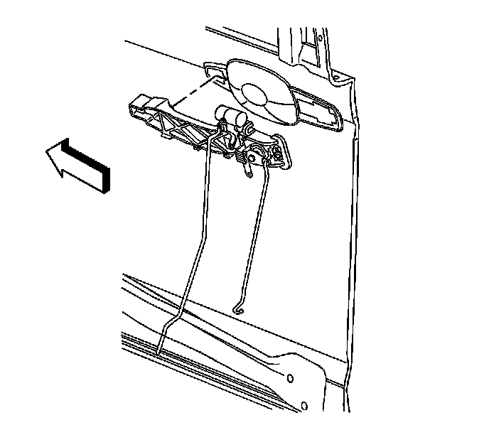
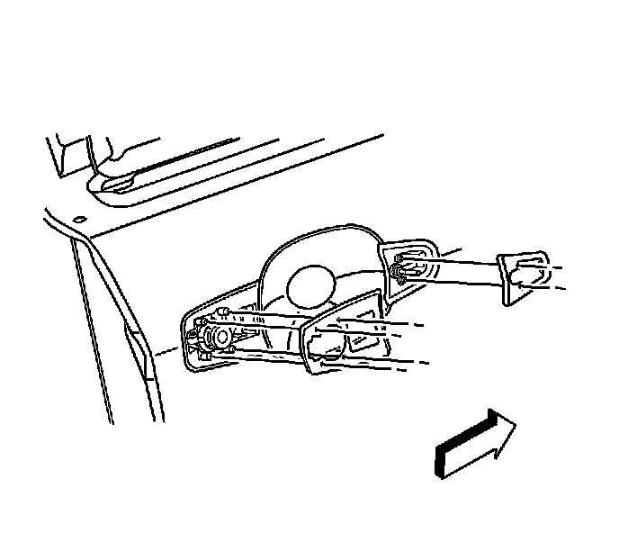

Front Door Exterior Handle: Service and Repair
Front Side Door Outside Handle Replacement
Removal Procedure
1. Place window in the full up position.
2. Remove the door trim panel. Refer to Front Side Door Trim Panel Replacement (Service and Repair) .
3. Remove the rear push in retainer on the water deflector.
4. Peel water deflector away from door panel far enough to access the outside door handle. Refer to Front Side Door Water Deflector Replacement (Service and Repair) .

5. Disconnect the outside door handle rod (1) by opening the retainer (2) at the door latch.

6. Remove the outside door handle cap screw access plug from the door.
7. Remove the screw securing the outside door handle cap.
8. Open the door handle slightly then remove the cap.

9. Raise the outside door handle counterbalance weight and remove the outside door handle by rocking outboard and sliding rearward.
10. Remove the gaskets.

11. Remove the outside door handle bracket by sliding rearward.
12. Remove the handle rod from the outside door handle bracket.
Installation Procedure
1. Install the handle rod to the outside door handle bracket.
2. Install the outside door handle bracket by inserting into opening and sliding forward.

3. Install the gaskets.
4. Raise the outside door handle counterbalance weight and install the outside door handle by rocking outboard and inserting into bracket then sliding rearward.
5. Open the door handle slightly then install the cap.
6. Install the screw securing the outside door handle cap.
7. Install the outside door handle cap screw access plug to the door.

8. Connect the door handle rod to the latch.
1. Insert the rod (1) into the clip (2) on the door latch assembly.
2. Close the clip.
Important: Inspect for the proper operation of the door handle and lock cylinder before installing the water deflector and the door trim panel.
9. Install the water deflector. Refer to Front Side Door Water Deflector Replacement (Service and Repair) .
10. Install the door trim panel. Refer to Front Side Door Trim Panel Replacement (Service and Repair) .